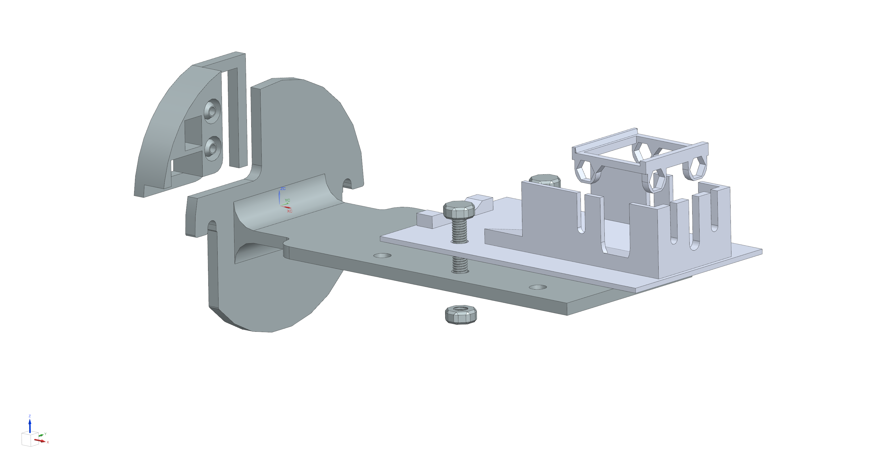
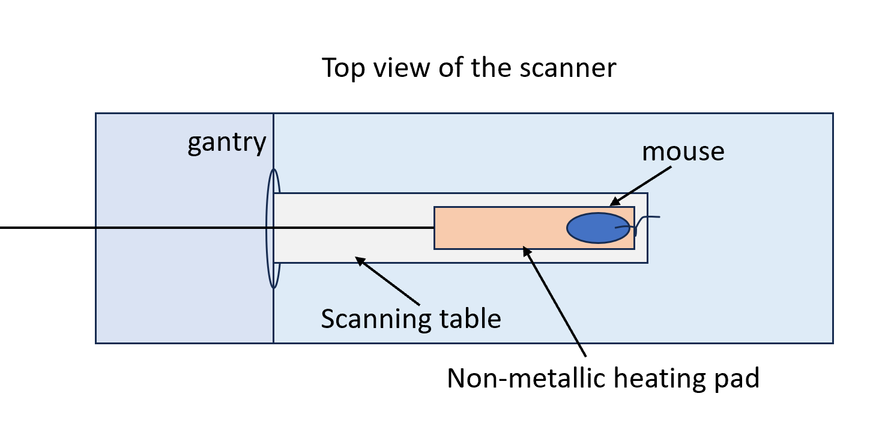

Multimodal imaging has a great utility in cancer research by concurrently providing anatomical, functional, and molecular information in live animals. During preclinical imaging of small animals like mice, anesthesia is required to inhibit animal movement and improve image quality. However, due to their large surface area relative to body weight, mice, especially nude mice, are more susceptible to hypothermia when under anesthesia. To address this problem, here we develop a detachable mouse table with a temperature-control function for hybrid x-ray and optical imaging, without introducing CT metal artifacts. Specifically, we design and 3D-print a customized detachable scanning table compatible with both CT and optical imaging systems. It enables seamless transportation of the anesthetized mouse between two imaging modalities. Our design facilitates a streamlined operational environment to accommodate various imaging purposes. The 3D-printed table parts, complemented by a glass cover, securely fix the animal imaging area in place, ensuring consistent positioning and posture of mice for different imaging modalities. With a metal-free carbon nanotube-based heating pad, the table allows sustained warming of the mouse body without inferencing x-ray imaging. Our experiments show the ability of the table system when supporting a 30g water bag at approximately 40℃ over 3 hours, effectively regulating the temperature to an optimal 36℃ during a preclinical imaging session. This imaging table is convenient and effective to use, offering a versatile platform that upholds animal welfare standards.
Introduction
In-vivo imaging using micro-computed tomography (micro-CT) has been a critical tool for preclinical research by providing noninvasive, high-resolution 3D imaging. This technology enables detailed visualization of internal structures, from low contrast soft tissues, such as lipid and water, to high contrast materials, such as calcium and iodine, allowing for precise material identification and quantification. Micro-CT has thus become a powerful imaging technique for multiple biological and biomedical research.
During micro-CT imaging, small animals, commonly mice, are anesthetized and positioned on a scanning table to prevent movement and minimize examination time. However, the high surface area-to-body weight ratio in these small animals predisposes them to hypothermia under anesthesia. Therefore, maintaining a constant body temperature near the animal’s normal range during imaging is a critical consideration.
The key component in achieving this is the design of the scanning table. The table must be equipped with a heating system that not only maintains the required temperature but is also compatible with the imaging system. Particularly challenging is the requirement for the heating subsystem to be devoid of metallic parts within the imaging field. Although the use of photon-counting provides way to reduce metal artefact such as beam hardening during reconstruction, avoiding the use of metal is preferable for achieving optimal imaging results. Another critical design constraint is the need to minimize the dimensions of the scanning table. An increase in the size of the scanning table directly translates to an enlarged scan dimension, which can result in prolonged examination times. This, in turn, leads to an increased dose of radiation exposure to the subject. Therefore, to minimize the radiation exposure for mice, it is essential that the scanning table be designed as compact as possible, ideally approximating, slightly larger than, the size of the mouse itself.
Non-metalic Heating Pad Solution
3D-printed Table
In addressing the need for a compact table size for micro-CT scanning, we have constructed a mouse scanning table using PLA (Polylactic Acid) 3D printing technology for the base structure. As shown in Figure below, the designing of this table includes a base that connects to the gantry of the scanner, a supporting bar, and a bed. The supporting bar extends from the base to hold the bed on which the mouse is placed during scanning. The dimensions of the table are within 50mm in width, 60mm in height, and 200mm in length, in which the cross-section area is slightly larger than the average size of a mouse, ensuring it is compact to facilitate short imaging duration. Additionally, the table is designed to be detachable from the scanner gantry, providing versatility for different projects that may require the scanner.
Building upon this 3D printed structure, we have explored various methods for integrating a heating subsystem. In biomedical research, the commonly used techniques to maintain animal warmth include air heating, fluid heating, and heating pad systems. However, considering the specific constraints of our project, the fluid heating method was ruled out due to the risk of fluid leakage, which could potentially damage the scanner. Consequently, we have focused our attention on the remaining two methods — air heating and heating pad systems.
Non-metalic Heating Pad
The heating pad system primarily features a non-metallic heating pad, which is a carbon nanotubebased flexible electrothermal film heater with high heating efficiency. It has low operational noise and the emission of farinfrared radiation, ensuring that it does not affect the imaging results. This heating pad is composed of three distinct layers, with the central layer being the heating element. This layer is designed to provide uniform heating across its surface, ensuring consistent temperature distribution. The flexible nature of the pad allows for easy adjustment and customization to fit the dimensions of the scanning bed perfectly. An extension cord will be connected to the heating pad at the gantry, serving as the power source for the heating pad.
